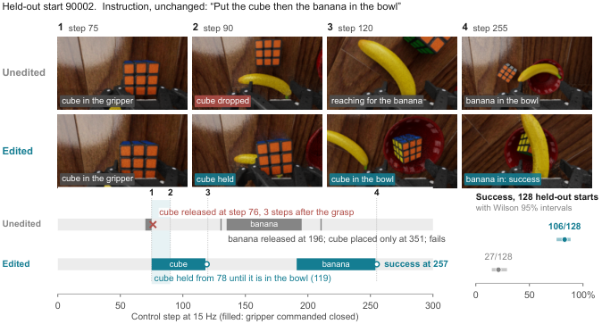

Distilling Instructions into Weights: Closed-Form Edits Fix a Robot Policy's Misreading
1. 背景信息
- 作者与机构：Ali-Adeeb Abbas（Northeastern University RIVeR Laboratory、General Motors），Esmaeil Seraj（General Motors）。
- 版本：2026-11-09，arXiv:2611.11894v1；本文按预印本正文及附录阅读，未见会议录用信息。
- 材料：论文全文｜项目页｜代码 weightsmith。代码、编辑脚本和逐 episode 结果公开；v1 附录 H 明确说原始 rollout、activation capture 和候选权重留在 GPU 主机，未随仓库发布。
- 版本边界：2026-11-13 查看的项目页已加入其他模型架构实验；下文结论限于 arXiv v1 的 π0.5 实验，不将网页扩展结果混入论文。
核心判断：这篇最值得复用的是“先找到模型已经能做对的输入，再把输入产生的内部变化写进权重”。作者把一条含糊指令的执行成功率从 21.1% 提至 82.8%，同时用随机方向、编辑位置和未编辑重复运行约束解释。证据支持修复已有技能的调用；尚未定位出完整的语法绑定电路，也没有证明能补上欠缺的运动技能。[§2–5]
2. 关键问题：机器人会搬方块，为什么抓住后又松手？
论文的真实案例是：
Put the cube then the banana in the bowl.
目标是依次把方块、香蕉放进碗里。原模型在诊断用的 64 次运行中，63 次先去找方块，却常常抬起几厘米就松手，最终只成功 9 次。问题不只是“夹爪力度不足”：同一个模型换成下面的明确表述，32 个配对运行的成功数从 3 增至 22。[§2]
Put the cube in the bowl then put the banana in the bowl.
作者固定图像、机器人状态和 flow-matching 噪声，重放 21 个已记录的提前释放决策，只改变指令。把 cube 改成 rubiks cube，21 个错误全部保留；将 “in the bowl” 放到 cube 旁边，只剩 1–3 个。这个对照支持作者的诊断：模型把目的地主要绑定到靠后的 banana，持有 cube 时没有正确维持“把当前物体搬到碗里”的行为。[Fig. 2a]

原文 Fig. 1，来源：arXiv v1 原图。看下方夹爪时间线：未编辑模型抓住后第 3 个控制步就释放，编辑后持续搬运到碗里。相机画面是选出的单例，右侧才是完整 128 次 held-out 统计。

一个注意力头也呈现目的地词偏向相邻名词的现象，但它只是辅助证据。更有说服力的是固定其他输入后改变词语关系，错误决策随之改变。 这仍未把错误定位到某个充分且必要的内部组件。[Appendix C；笔记者判断]
3. 关键方法：把明确指令造成的逐层变化蒸馏到 MLP
3.1 沿着同一个方块案例走一遍
π0.5 的 VLM 先处理两路相机、指令和状态 token；action expert 读取 VLM 的 K/V，再通过 flow matching 生成动作。这里 VLM 的 prefix attention 是双向的，图像 token 也能读到语言。[§2]
作者取 6 个提前释放决策，各自在原指令和明确指令下前向计算，得到一组“同场景、同状态、不同说法”的内部对照。接下来只修改 VLM 第 0–16 层的 MLP down-projection，让原说法下的 MLP 输入产生接近明确说法的残差增量。部署时机器人继续接收原指令，action expert 的参数保持原样。
这里必须分清两件事：写入的是每层 residual increment 的差值；编辑目标覆盖若干 token 位置，但参数更新会作用于所有经过这层的输入。 它不是运行时只在选定位置开启的补丁。
3.2 闭式解究竟在拟合什么？
第 $\ell$ 层构造：
- $K_\ell\in\mathbb{R}^{72\times16384}$：原指令下 MLP down-projection 的输入。每行对应一个位置，在 6 个决策上取平均。
- 72 个位置包括 40 个两种 prompt 共有的起始、Task: 与机器人状态位置，以及 32 个图像 cell（每个相机 16 个）。不要求两个不同长度的指令逐词对齐。
- $V_\ell\in\mathbb{R}^{72\times2048}$：同一位置在明确指令与原指令下，该层残差增量之差。
使用行向量约定，更新为：
它使 $K_\ell\Delta W_\ell\approx V_\ell$：这些原指令触发的输入方向，经过更新后的线性层，多得到一份接近明确指令的残差变化。正则项限制更新规模、改善求解稳定性；每层 rank 至多为 72。[Eq. 1；Appendix C]
数学工具沿用模型编辑中的多 key 闭式更新。本文的具体贡献是把已知有效的指令改写变成编辑目标，并用机器人闭环执行检验它。这里没有梯度训练或新专家示范，但使用了机器人观测、失败记录、激活及仿真反馈，不能宽泛地称为“完全不需要数据”。
3.3 为什么图像位置重要？
只写 prompt 和状态位置，21 个提前释放仍剩 13 个；加入图像位置后全部消失。只用图像位置、覆盖第 0–16 层，也能消除这 21 个离线错误。相反，沿一个能区分 cube/banana 的单一方向做 steering，两次尝试都没有改变释放决策。[Fig. 2b；Table 7]
这支持一种解释：明确指令改变了语言条件化的图像表示，action expert 从这些表示中取得“继续持有并搬运”的信息。作者未证明这是唯一通路；一个相关方向的干预失败，也不能证明它在所有条件下都没有因果作用。
低秩不等于稀疏。 小版本只用第 8–16 层的 32 个图像 key，低秩因子占 5.3M 参数量，约为全模型的 0.16%；合并进权重后却改变约 2.48 亿个存储标量，即 7.4%。完整版本则改变 13.4% 的存储标量。“0.16%”描述补丁的因子存储成本，不是实际被改写权重的比例。[§4.2；Appendix C]
4. 数据与评估：用配对闭环结果检验离线修复
实验使用约 3.35B 的 OpenPI π0.5 DROID joint-position checkpoint，在 16 个 RoboLab / Isaac Sim 任务上零样本评估；checkpoint 没有在这些任务上训练。每次输入两张 $224\times224$ 图像及机器人状态，输出 15 步动作块，包含 7 个关节与夹爪命令。[§3]
编辑在 practice seeds 上构建和筛选，冻结后才交给独立评分流程跑 held-out seeds。原模型与编辑模型使用相同 simulator slots，并在两半样本中交换运行先后。结果记录 fixed（失败变成功）/ broke（成功变失败），采用 exact McNemar 检验与配对区间。[§3；Appendix H]
这一设计很必要：同 seed 不能消除所有仿真与渲染差异。作者记录的同权重重跑也会出现大量双向翻转，因此另跑未编辑对照，不能把每个“救回的 episode”都直接归因于编辑。
5. 关键结果：主任务提升很强，编辑位置和适用边界同样重要
5.1 首先确认收益超过噪声，而且来自更新方向
| 比较 | 原模型 → 测试条件 | fixed / broke | 说明 |
|---|---|---|---|
| 完整编辑，128 held-out seeds | 27/128 → 106/128 | 81 / 2 | +61.7 个百分点；95% 区间 [52.3, 70.3]；$p=7.2\times10^{-22}$ |
| 同层、同 rank、同奇异值的随机方向，前 64 seeds | 13/64 → 9/64 | 6 / 10 | $p=0.45$，随机扰动没有复制收益 |
| 原权重配明确指令，同 64 seeds | 13/64 → 57/64 | 45 / 1 | 同组完整编辑为 50/64，编辑恢复了改写的大部分效果 |
| 自动工具构建的小版本，新 64 seeds | 8/64 → 36/64 | 33 / 5 | $p=4.3\times10^{-6}$，端到端流程有收益，但低于手工构建实验的绝对成功率 |
来源：§4.1、§4.5、Appendix C/H。随机对照在舍入前匹配层、秩、奇异值和范数，不严格匹配 bf16 舍入后实际变化的标量数。
自动工具 weightsmith distill 按规则选失败决策、采集激活、求解和离线检查；有效改写仍由调用者提供，闭环 held-out 评分由外部流程执行。它只在这个任务上验证过，不能等同于自动发现并修复任意机器人故障。[§4.5]
5.2 同样的教师信号，写到哪里更有效？
Table 1 使用另一组 共享 64 个 held-out seeds，原模型为 5/64：
| 编辑位置 | 成功数 / 64 | 关键现象 |
|---|---|---|
| VLM，完整编辑 | 55 | 最好；还能改善两个迁移任务 |
| VLM，小版本 | 41 | 显著弱于完整版本，直接比较 $p=0.007$ |
| VLM + action expert | 43 | 离线匹配更近，但闭环反而不如只改 VLM |
| 只改 action expert | 20 | 52% 的运行在第一动作块就闭爪，尚未到达物体 |
| action head，最小范数更新 | 0 | 94% 的运行第一动作块闭爪，修复方向缺乏状态选择性 |
| action head，加门控 | 30 | 能改善主任务，但未迁移到另外两个任务 |
来源：§4.4，Table 1/10。门控 head 编辑来自盲测 Agent，额外使用保留行为的负例；各方案参数量和约束不同，不是严格的等预算层定位实验。
这个结果给出比“改夹爪输出”更具体的理由：在上游写入目的地信息，可以让下游自己区分什么时候持有、什么时候释放；直接推动输出更容易在接近香蕉等正确行为上同时闭爪。action expert 还有缩小 MLP 输出的门控，穿过门控求解需要更大的权重变化，进一步放大副作用。[§4.4；Appendix G]
小版本另一次 128-seed 实验为 102/128，对照 19/128。不能拿它与完整版本的 106/128 直接宣布“性能基本无损”：两次基线不同，且上表的直接比较已经检出了差距。
5.3 哪些结果限制了结论？
同一编辑在 held-out seeds 上使拿眼镜从 22/64 到 44/64、方块放到碗左边从 8/64 到 36/64；放到右边仍为 0/32。其余 13 项没有检出显著差异，但许多只有 16–32 次配对，这支持有限迁移，不能保证没有能力损失。[§4.3；Table 9]
7 个独立、互盲的 Claude Opus 编辑会话中，只有处理该误读指令的候选通过 held-out 检验。它找到的是 1,024 个值的门控 action-head 编辑，成功数 11/64→27/64；不要把这一结果与操作员会话构建的完整 VLM 编辑混为一次自主发现。[§4.6]
其他故障还揭示了一个重要反例：堆叠任务的编辑把“空夹爪在堆上闭合”从 73 次 replan 降到 5 次，held-out 成功却只是 35/64→39/64，$p=0.585$。修正一个错误决策之后，第三块的放置精度仍不足。视觉混淆、抓取姿态和接触滑落的编辑也未得到可靠成功提升。[§4.6–4.7]
噪声也限制了这些负结论的强度。按 30% 配对结果不一致、80% power 的近似，32 对 episode 只能检测约 27 个百分点的变化，128 对约为 14 个百分点。小样本上的“不显著”不能排除小幅收益或损害。[Fig. 5；Table 6]
6. Insights
6.1 最有价值的是“已知正确输入”提供了反事实教师
这项工作先改变指令而固定观测，再把内部差值写入权重，最后回到原指令测试，因而把诊断和修复连起来了。对 VLA 可解释性研究，我会优先寻找同一个物理状态下，等价说法能使动作从错变对的案例；它比单纯从成功/失败轨迹相减更少混入状态差异。随后再用局部 activation patching、路径干预检查哪些变化必要，而不是把一次大范围低秩编辑的成功当作电路已解释。[基于 §2、§4 的研究判断]
6.2 复现时应把“改写指令”保留为强基线
明确指令本身就很好，权重编辑的实际价值取决于指令是否必须保持原样、能否泛化到未见表述、以及回归风险。若部署端允许可靠改写，本文尚未给出权重编辑优于它的证据。值得做的下一轮是：在未见对象与关系组合上，比较 prompt 改写、65 行词嵌入编辑、本文逐层蒸馏，使用同一批观测和配对种子；分别测词义错误与关系绑定错误。[后续实验设想]
6.3 “没有已知正确输入”应是停止当前方案的信号
平盒抓取与滑落实验表明，调对一个姿态或夹爪标量也可能无法完成任务。这给出了实用的资源分配准则：先验证现有策略能否在某种等价输入下完成任务，再决定是否继续做蒸馏。但当前证据来自一个零样本 checkpoint 与有限候选，不能把它升级为“权重编辑永远不能产生新技能”的理论边界。[§5；笔记者判断]
7. 连接与发现
- MOC-VLA — 输入表述变化如何通过视觉语言表示影响机器人动作。
- MOC-Interpretability — 固定观测反事实、权重干预与闭环行为验证的证据层次。
- Can-LLMs-Debug-Robots-by-Editing-Their-Weights-词嵌入稀疏修复 — 另一个团队在 pi05_libero 上改词嵌入行，提供更强的输入不命中时局部性保证；本文则处理复合指令的目标绑定。本文引用的 companion study 是 Abbas/Seraj 自己的仓库研究，并非这篇 Zhang 等人的论文。